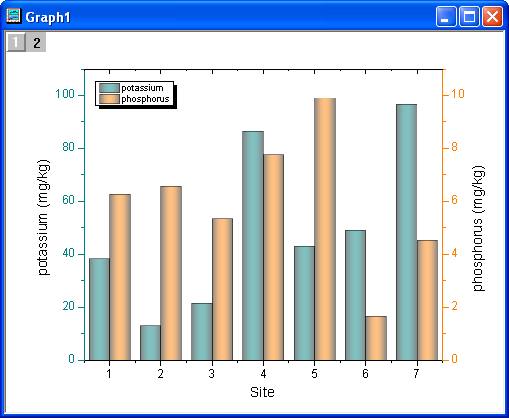
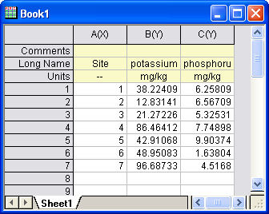
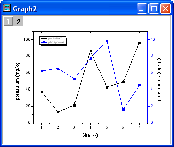
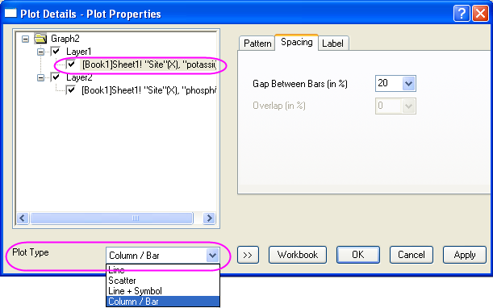
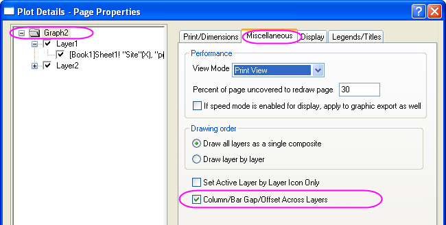
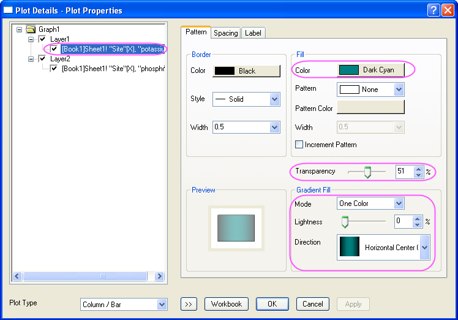
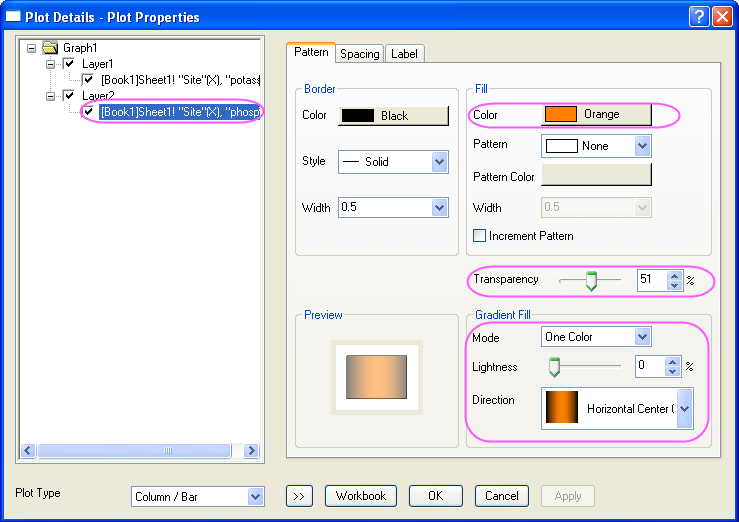
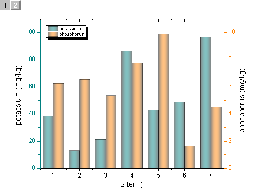

Säulen/Balkenabstand/Verschiebung über Layer
MultiLay-ColumnGraph-Gap
Zusammenfassung
Dieses Tutorial zeigt Ihnen, wie Sie ein Säulendiagramm mit mehreren
Layern und Abständen zwischen den Layern erstellen.

Origin-Version mind. erforderlich: Origin 8.5.1 SR0
Was Sie lernen
werden
Dieses Kapitel zeigt Ihnen, wie Sie:
- ein Säulendiagramm mit doppelter Y-Achse erstellen,
- einen Abstand zwischen den Säulendiagrammen in unterschiedlichen
Layern hinzufügen.
Schritte
- Kopieren Sie die Beispieldaten und fügen Sie sie in ein neues Origin-Arbeitsblatt
ein.
| Site |
potassium |
phosphorus |
|---|
| -- |
mg/kg |
mg/kg |
|---|
| 1 |
38,22409 |
6,25809 |
| 2 |
12,83141 |
6,56709 |
| 3 |
21,27226 |
5,32531 |
| 4 |
86,46412 |
7,74898 |
| 5 |
42,91068 |
9,90374 |
| 6 |
48,95083 |
1,63804 |
| 7 |
96,68733 |
4,5168 |
- Setzen Sie die erste Zeile als Langname und die
zweite Zeile als Einheiten.

- Zeichnen Sie ein Diagramm mit doppelter Y-Achse. Markieren Sie
alle Spalten. Klicken Sie im Hauptmenü von Origin auf Zeichnen,
Mehrere Y und anschließend auf Doppelte Y-Achse. Alternativ
können Sie einfach auf die Schaltfläche Doppelte Y-Achse auf der Symbolleiste
2D-Grafiken klicken.

- Klicken Sie zum Öffnen des Dialogs Details Zeichnung doppelt auf
das Diagramm. Wählen Sie im linken Bedienfeld dieses Dialogs ein Diagramm
aus (wie unten) und ändern Sie den Diagrammtyp in den Typ Säulen/Balken.
Tun Sie dies für beide Diagramme.

- Wählen Sie im linken Bedienfeld des Dialogs Details Zeichnung die
oberste Ebene (Graph2 im Beispiel unten). Aktivieren Sie auf der Registerkarte
Allgemeines das Kontrollkästchen Säulen/Balkenabstand/Verschiebung
über Layer.

| Hinweis: Wenn das Kontrollkästchen
Säulen/Balkenabstand/Verschiebung über Layer aktiviert ist, können
Sie den Abstand zwischen den Balken benutzerdefiniert anpassen, indem
Sie die Einstellung für Abstand zwischen Balken (in %) auf der
Registerkarte Abstände des Dialogs Details Zeichnung der
Datenzeichnung in Layer 1 ändern; die entsprechenden Bedienelemente in
Layer 2 werden entsprechend deaktiviert. |
| Hinweis: Um das Kontrollkästchen
Säulen/Balkenabstand/Verschiebung über Layer zu aktivieren, sollten
alle Layer in der Zeichnung mit Layer 1 verknüpft sein. |
- Wählen Sie im linken Bedienfeld die erste Zeichnung und wenden
Sie die folgenden Stileinstellungen auf die Säulen an. Tun Sie das Gleiche
mit der zweiten Zeichnung (das zweite Bild unten dient als Referenz).


- Klicken Sie auf OK, um den Dialog zu schließen. Das Diagramm sollte
folgendermaßen aussehen:
